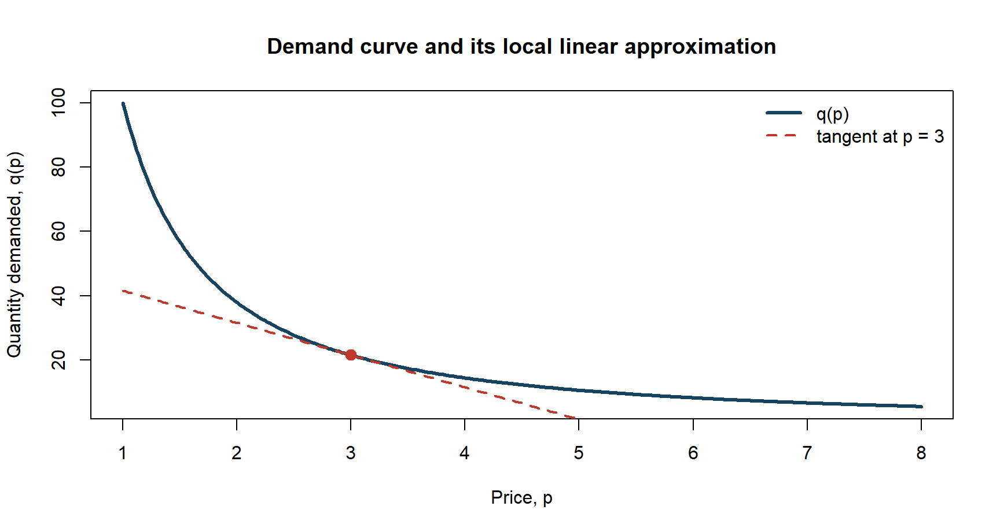
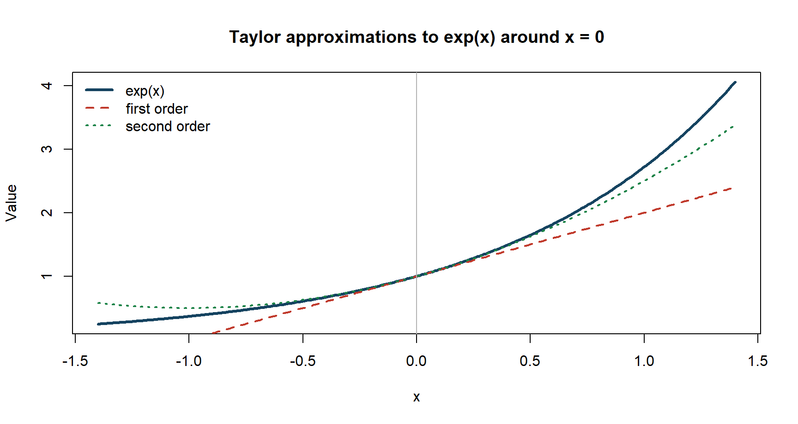
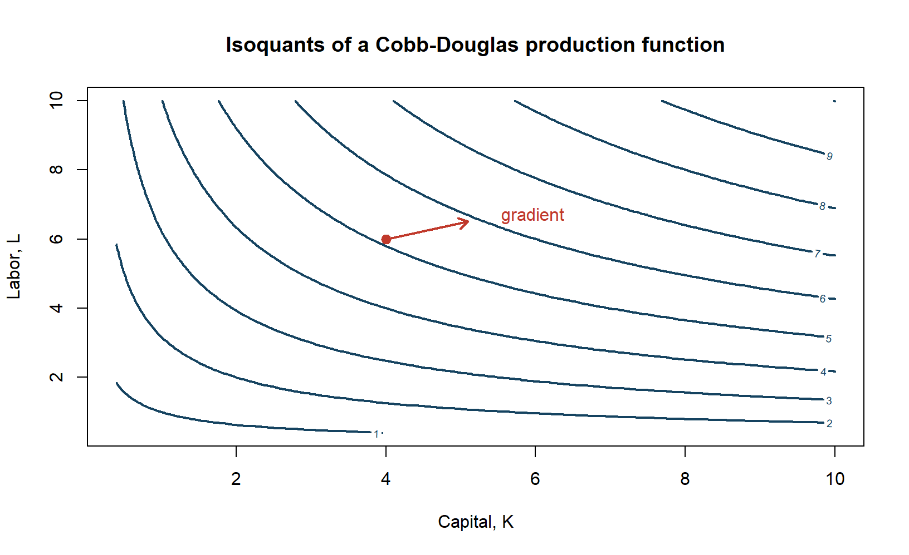
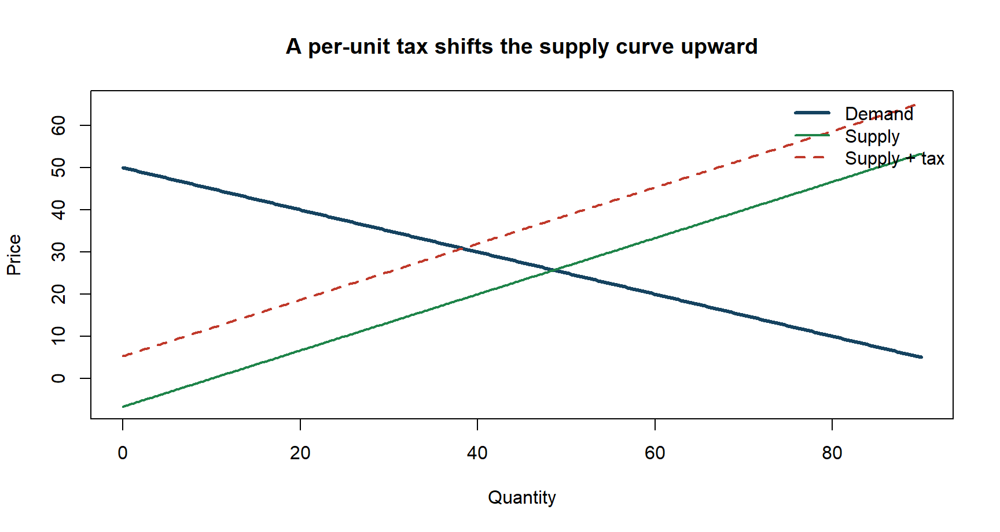
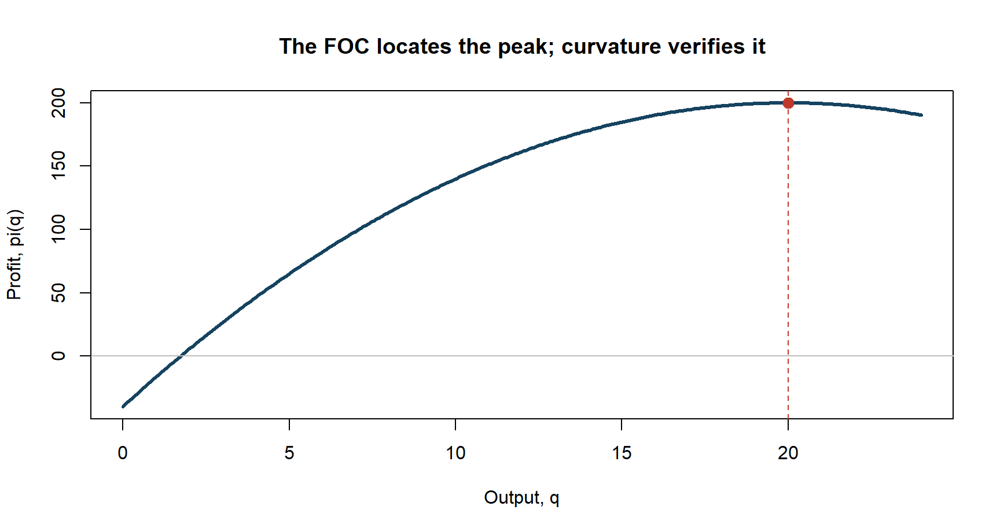

EPPS Math and Coding Camp
Calculus
Why calculus is the language of economic change
- Economic models ask how an outcome changes when a choice, price, policy, or parameter changes.
- A derivative measures local change.
- A total derivative tracks several channels of change at once.
- An optimization condition turns economic behavior into equations we can analyze.
Our path today
\[\text{Marginal change} \longrightarrow \text{Multivariable change} \longrightarrow \text{Comparative statics} \longrightarrow \text{Optimization}\]
By the end, you should be able to read, compute, and interpret the calculus that appears in first-year economics.
Learning objectives
By the end of this session, you should be able to:
- interpret derivatives, elasticities, and Taylor approximations;
- compute gradients, total differentials, and Hessians;
- use implicit differentiation for comparative statics;
- solve basic unconstrained and equality-constrained optimization problems;
- explain the economic meaning of first-order conditions and multipliers.
Warm-up: what do you already recognize?
Without calculating everything, identify what each object is asking for.
- \(\displaystyle \frac{d}{dp}\left(Ap^{-\varepsilon}\right)\)
- \(\displaystyle \frac{\partial F(K,L)}{\partial K}\)
- \(\displaystyle F(p,t)=0 \quad\Rightarrow\quad \frac{dp^*}{dt}=?\)
- \(\displaystyle \max_x f(x) \quad \text{s.t.}\quad g(x)=m\)
1. Marginal change
A derivative is a local comparison
For a function \(y=f(x)\),
\[f'(x)=\lim_{h\to 0}\frac{f(x+h)-f(x)}{h}.\]
- Numerator: change in the outcome.
- Denominator: change in the input.
- Limit: make the comparison local.
Economically, \(f'(x)\) is a marginal effect, holding the model fixed.
The derivative rules are a compact toolkit
| Function | Derivative |
|---|---|
| \(x^a\) | \(ax^{a-1}\) |
| \(af(x)+bg(x)\) | \(af'(x)+bg'(x)\) |
| \(f(x)g(x)\) | \(f'(x)g(x)+f(x)g'(x)\) |
| \(f(x)/g(x)\) | \([f'(x)g(x)-f(x)g'(x)]/g(x)^2\) |
| \(f(g(x))\) | \(f'(g(x))g'(x)\) |
| \(e^x\) | \(e^x\) |
| \(\log x\) | \(1/x\) |
The chain rule follows the channel of change
Suppose output depends on capital, and capital depends on the interest rate:
\[Y=F(K), \qquad K=K(r).\]
Then
\[\frac{dY}{dr} = \frac{dF}{dK}\frac{dK}{dr}.\]
Interpretation:
\[\text{effect of }r\text{ on }Y = \text{effect of }K\text{ on }Y \times \text{effect of }r\text{ on }K.\]
Elasticity puts marginal change in percentage units
For \(y=f(x)\), the elasticity of \(y\) with respect to \(x\) is
\[\varepsilon_{y,x} = \frac{dy}{dx}\frac{x}{y} = \frac{d\log y}{d\log x}.\]
Elasticity answers:
By approximately what percent does \(y\) change when \(x\) rises by one percent?
It is unit-free, so it supports comparisons across markets and scales.
Constant-elasticity demand makes the interpretation transparent
Let
\[q(p)=Ap^{-\varepsilon}, \qquad A>0,\ \varepsilon>0.\]
Then
\[q'(p)=-\varepsilon Ap^{-\varepsilon-1}\]
and
\[\frac{dq}{dp}\frac{p}{q}=-\varepsilon.\]
The exponent is the price elasticity, with the sign reflecting the downward-sloping demand curve.
R makes the local nature of a derivative visible

Figure 1
Quick check: elasticity
Suppose \(q(p)=400p^{-2}\).
- Is demand upward- or downward-sloping?
- What is the price elasticity?
- If price increases by 1%, what is the approximate percentage change in quantity?
Answer: elasticity is \(-2\), so quantity falls by approximately 2%.
Taylor approximation turns a nonlinear model into a local linear model
Near \(x_0\),
\[f(x) \approx f(x_0)+f'(x_0)(x-x_0).\]
Including curvature gives
\[f(x) \approx f(x_0)+f'(x_0)(x-x_0) +\frac{1}{2}f''(x_0)(x-x_0)^2.\]
Economists use this idea for approximation, log-linearization, comparative statics, and asymptotic statistics.
First-order approximation is accurate locally

Figure 2
2. Multivariable change
Most economic outcomes depend on several inputs
Consider a Cobb-Douglas production function:
\[Y=F(K,L)=AK^\alpha L^\beta.\]
The marginal product of capital is
\[F_K(K,L)=\frac{\partial F}{\partial K} =\alpha AK^{\alpha-1}L^\beta.\]
The partial derivative changes \(K\) while holding \(L\) fixed.
The gradient collects all first-order marginal effects
For \(f:\mathbb R^n\rightarrow\mathbb R\),
\[\nabla f(x) = \begin{bmatrix} \partial f/\partial x_1\\ \vdots\\ \partial f/\partial x_n \end{bmatrix}.\]
For \(F(K,L)\),
\[\nabla F(K,L) = \begin{bmatrix} F_K(K,L)\\ F_L(K,L) \end{bmatrix}.\]
The gradient points in the direction of the steepest local increase.
The total differential adds the channels of change
For \(z=f(x,y)\),
\[dz=f_x(x,y)\,dx+f_y(x,y)\,dy.\]
In vector notation,
\[df=\nabla f(x)'dx.\]
For production,
\[dY\approx F_K\,dK+F_L\,dL.\]
This decomposes the change in output into a capital channel and a labor channel.
Multivariable chain rule: direct and indirect effects
Suppose utility depends on consumption, while consumption depends on income:
\[U=U(c_1,c_2), \qquad c_1=c_1(m),\quad c_2=c_2(m).\]
Then
\[\frac{dU}{dm} = U_{c_1}\frac{dc_1}{dm} + U_{c_2}\frac{dc_2}{dm}.\]
Every channel contributes a marginal effect multiplied by the response of that channel.
The Hessian collects curvature
For \(f(x_1,\ldots,x_n)\),
\[H_f(x)= \begin{bmatrix} f_{11} & \cdots & f_{1n}\\ \vdots & \ddots & \vdots\\ f_{n1} & \cdots & f_{nn} \end{bmatrix}.\]
The second-order approximation is
\[f(x+\Delta x) \approx f(x)+\nabla f(x)'\Delta x +\frac{1}{2}\Delta x'H_f(x)\Delta x.\]
The gradient gives slope; the Hessian gives curvature and interactions.
Concavity connects curvature to global behavior
- If \(H_f(x)\) is negative definite, \(f\) is locally strictly concave at \(x\).
- If \(f\) is concave on its domain, any point satisfying the appropriate first-order condition is a global maximizer.
For a \(2\times2\) symmetric Hessian,
\[H= \begin{bmatrix} f_{11}&f_{12}\\ f_{12}&f_{22} \end{bmatrix},\]
negative definiteness requires
\[f_{11}<0, \qquad \det(H)>0.\]
Level curves organize multivariable information

Figure 3
Quick check: total change
Let \(Y=K^{1/3}L^{2/3}\).
- Find \(Y_K\) and \(Y_L\).
- Write the total differential \(dY\).
- If both inputs rise by 1%, what is the approximate percentage change in output?
Answer: approximately 1%, because the output elasticities sum to one.
3. Comparative statics
Equilibrium is often defined by an equation, not a closed form
Suppose an equilibrium \(y^*\) satisfies
\[F(y^*,\theta)=0,\]
where \(\theta\) is an exogenous parameter.
The comparative-static question is
\[\frac{dy^*}{d\theta}=?\]
We do not always need to solve explicitly for \(y^*(\theta)\).
Implicit differentiation gives the local response
Differentiate the equilibrium condition:
\[F_y\,dy^*+F_\theta\,d\theta=0.\]
If \(F_y\neq0\), then
\[\boxed{ \frac{dy^*}{d\theta} = -\frac{F_\theta}{F_y} }\]
The denominator condition is what allows the equilibrium relation to be locally solved for \(y\).
Example: a per-unit tax shifts market equilibrium
Let demand and supply be
\[Q_D=a-bp, \qquad Q_S=c+d(p-t).\]
Equilibrium satisfies
\[F(p,t)=a-bp-c-d(p-t)=0.\]
Therefore,
\[\frac{dp^*}{dt} = -\frac{F_t}{F_p} = \frac{d}{b+d}>0.\]
The consumer price rises, but generally by less than the full tax.
R shows the equilibrium before and after the tax

Figure 4
Comparative statics is about signs, magnitudes, and conditions
When you derive \(dy^*/d\theta\), ask:
- Sign: does the equilibrium rise or fall?
- Magnitude: how sensitive is the equilibrium?
- Mechanism: which derivative drives the result?
- Condition: what must be nonzero or have a particular sign?
- Scope: is the result local or global?
4. Optimization
Optimization turns behavior into equations
An unconstrained choice problem has the form
\[\max_x f(x).\]
At an interior optimum \(x^*\), a small feasible change cannot improve the objective.
This intuition produces the first-order condition
\[f'(x^*)=0.\]
But a zero derivative identifies a candidate, not automatically a maximum.
First-order and second-order conditions do different jobs
For a one-dimensional interior optimum:
- FOC: \(f'(x^*)=0\) identifies stationary points.
- SOC for a strict local maximum: \(f''(x^*)<0\) verifies downward curvature.
- Global statement: concavity ensures a stationary point is a global maximum.
Boundary points must be checked separately.
Example: a profit-maximizing firm sets marginal revenue equal to marginal cost
Let
\[\pi(q)=R(q)-C(q).\]
The first-order condition is
\[\pi'(q^*)=R'(q^*)-C'(q^*)=0,\]
so
\[MR(q^*)=MC(q^*).\]
The economic rule is the mathematical condition with labels attached.
A graph separates the candidate from the curvature condition

Figure 5
In several dimensions, the gradient must vanish
For
\[\max_{x\in\mathbb R^n} f(x),\]
an interior optimum satisfies
\[\nabla f(x^*)=0.\]
For two variables, this is a system:
\[f_{x_1}(x_1^*,x_2^*)=0, \qquad f_{x_2}(x_1^*,x_2^*)=0.\]
The Hessian then provides the local curvature test.
A constraint changes which directions are feasible
Consumer choice has the form
\[\max_{x_1,x_2} u(x_1,x_2) \quad\text{s.t.}\quad p_1x_1+p_2x_2=m.\]
At an interior optimum, the highest attainable indifference curve is tangent to the budget line.
The constraint means we cannot perturb \(x_1\) and \(x_2\) independently.
The Lagrangian incorporates the constraint
Write
\[\mathcal L(x_1,x_2,\lambda) = u(x_1,x_2) +\lambda(m-p_1x_1-p_2x_2).\]
The first-order conditions are
\[u_{x_1}-\lambda p_1=0, \qquad u_{x_2}-\lambda p_2=0, \qquad m-p_1x_1-p_2x_2=0.\]
These equations jointly determine \(x_1^*\), \(x_2^*\), and \(\lambda^*\).
Tangency equates marginal benefit per dollar
Dividing the first two conditions gives
\[\frac{u_{x_1}}{u_{x_2}} = \frac{p_1}{p_2}.\]
Equivalently,
\[\frac{u_{x_1}}{p_1} = \frac{u_{x_2}}{p_2} =\lambda.\]
At an interior optimum, the last dollar spent on either good generates the same marginal utility.
Worked example: Cobb-Douglas demand
Let
\[u(x_1,x_2)=x_1^\alpha x_2^{1-\alpha}, \qquad 0<\alpha<1.\]
Solving the FOCs and the budget constraint gives
\[x_1^*=\frac{\alpha m}{p_1}, \qquad x_2^*=\frac{(1-\alpha)m}{p_2}.\]
The consumer spends a constant share \(\alpha\) on good 1 and \(1-\alpha\) on good 2.
The multiplier is a shadow value
Let the value function be
\[V(m)=\max_x f(x) \quad\text{s.t.}\quad g(x)=m.\]
Under regularity conditions,
\[\frac{dV(m)}{dm}=\lambda^*.\]
\(\lambda^*\) measures how much the optimized objective changes when the constraint is relaxed by one unit.
Examples: marginal utility of income, value of capacity, or value of a policy resource.
The envelope theorem avoids differentiating the optimizer
Suppose
\[V(\theta)=\max_x f(x,\theta).\]
At an interior optimum,
\[\frac{dV}{d\theta} = f_x(x^*,\theta)\frac{dx^*}{d\theta} +f_\theta(x^*,\theta).\]
Because \(f_x(x^*,\theta)=0\),
\[\boxed{\frac{dV}{d\theta}=f_\theta(x^*,\theta)}.\]
At the optimum, the indirect effect through the optimizing choice vanishes to first order.
One calculus toolkit appears across the PhD core
| Tool | Microeconomics | Macroeconomics | Econometrics |
|---|---|---|---|
| Derivative | marginal utility | growth rates | score function |
| Gradient | FOCs | equilibrium systems | normal equations |
| Hessian | concavity | local dynamics | information matrix |
| IFT | demand responses | policy comparative statics | estimator sensitivity |
| Taylor expansion | welfare approximation | log-linearization | delta method |
| Optimization | consumer/firm choice | planner problem | MLE/GMM |
Common mistakes to catch early
- Treating a partial derivative as if every other variable also changes.
- Forgetting the inner derivative in the chain rule.
- Treating a first-order condition as proof of a maximum.
- Ignoring boundary or corner solutions.
- Interpreting a local comparative-static result as a global theorem.
- Reporting a derivative without units or economic interpretation.
Practice: connect the tools
Consider a competitive firm with production \(q=\sqrt{L}\), output price \(p\), and wage \(w\).
\[\pi(L)=p\sqrt L-wL.\]
- Derive the firm’s labor demand \(L^*(p,w)\).
- Determine the sign of \(\partial L^*/\partial w\).
- Find the optimized profit \(\pi^*(p,w)\).
- Use the envelope theorem to find \(\partial\pi^*/\partial w\).
Practice solution
The FOC is
\[\frac{p}{2\sqrt L}-w=0,\]
so
\[L^*(p,w)=\frac{p^2}{4w^2}.\]
Therefore,
\[\frac{\partial L^*}{\partial w} =-\frac{p^2}{2w^3}<0.\]
The optimized profit is
\[\pi^*(p,w)=\frac{p^2}{4w}.\]
The envelope check
Direct differentiation gives
\[\frac{\partial\pi^*}{\partial w} =-\frac{p^2}{4w^2}.\]
The envelope theorem gives the same answer immediately:
\[\frac{\partial\pi^*}{\partial w} = \left. \frac{\partial\pi(L;p,w)}{\partial w} \right|_{L=L^*} =-L^* =-\frac{p^2}{4w^2}.\]
Economic interpretation: a marginal wage increase reduces optimized profit by the firm’s optimal labor demand.
Exit ticket
In one sentence or one equation, answer each question.
- What is the difference between a partial derivative and a total derivative?
- What additional condition turns an FOC candidate into a maximum?
- What does \(-F_\theta/F_y\) measure?
- What is the economic meaning of a Lagrange multiplier?
Keep this mental map
\[\boxed{ \begin{array}{c} \text{Derivative}=\text{marginal change}\\[3pt] \text{Gradient}=\text{all marginal changes}\\[3pt] \text{Hessian}=\text{curvature}\\[3pt] \text{IFT}=\text{equilibrium response}\\[3pt] \text{FOC + curvature}=\text{optimal choice} \end{array}}\]
The goal is not to memorize isolated formulas. It is to recognize which economic question each object answers.
Questions?
Primary reference: Simon and Blume, Mathematics for Economists, Chapters 2-5 and 13-19.